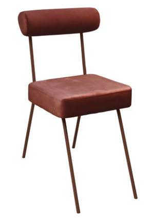

Elaborar um memorial descritivo já não é mais uma novidade para você, não é mesmo? Na unidade curricular (UC) Projetar design de interiores residencial, no conteúdo Memorial descritivo: elaboração, especificação, quantificação, você viu a importância desse documento no projeto de design de interiores e entendeu como realizar a sua elaboração.
Ao projetar o design de espaços efêmeros, não seria diferente. O memorial descritivo desempenha um importante papel, sendo um documento essencial, responsável por comunicar a visão, os conceitos e os detalhes técnicos do projeto para todas as partes nele envolvidas. Além disso, documenta a sua especificação técnica, garantindo que a sua indicação de produtos e materiais para o projeto esteja documentada, resguardando sua responsabilidade técnica.
Portanto, esse documento ajuda a articular a visão do projeto, orienta o desenvolvimento e a execução, facilita a tomada de decisões, assegura a consistência e fornece uma documentação importante para uma futura referência.
O memorial descritivo é um importante documento que comporá a entrega final do projeto de design de interiores. Trata-se de um documento escrito, no qual devem ser definidos e detalhados todos os itens necessários para a completa execução do espaço projetado, incluindo desde a parte estrutural, materiais de revestimentos e iluminação, até mesmo itens ornamentais. Todos os itens devem ser especificados de forma clara, contendo suas descrições técnicas, a quantidade necessária de cada um deles, uma imagem do item, suas dimensões, a indicação de local de compra e os valores.
O memorial descritivo, além de servir de guia para os profissionais envolvidos na execução do projeto, garante que todas as decisões e especificações sejam compreendidas e seguidas corretamente. Ele também pode ser usado como uma ferramenta de comunicação entre o designer de interiores e o cliente, ajudando a visualizar e entender a proposta para o espaço.
Por último, mas não menos importante, esse documento comprovará a responsabilidade técnica do designer quanto às escolhas feitas. Por isso, também é preciso detalhar claramente o item que se está especificando, para que não gere dúvidas.
Análise de informações
Fonte: Pixabay (2024)
Um homem sentado de costas, olhando para uma parede que tem diversos papeis fixados, contendo textos, gráficos e imagens.
Ainda que o memorial descritivo componha parte do projeto executivo, a sua elaboração deve iniciar ainda nas fases iniciais do projeto, quando ainda estão sendo levantadas as informações, entendendo os requisitos do cliente, as restrições do espaço, os objetivos estéticos e funcionais, o orçamento disponível e qualquer outra informação importante ao projeto, obtendo uma base sólida para as suas escolhas.
Após a coleta das informações iniciais, já se consegue, então, realizar a análise detalhada do espaço que o projeto ocupará, além de desenvolver e definir um conceito criativo. Isso envolve a definição de temas, estilos, paletas de cores e outras diretrizes que guiarão as escolhas de materiais a serem feitas pelo designer.
Com o conceito criativo definido, consegue-se, então, definir os materiais, os acabamentos, o mobiliário, a iluminação e todos os demais elementos que serão utilizados no projeto. Nesse momento de escolha, procure considerar fatores como durabilidade, estética, função e uso, custos e sustentabilidade.
Com as principais escolhas definidas, parte-se para o desenvolvimento do leiaute e o detalhamento do projeto em si. Nessa etapa, define-se como de fato o espaço efêmero será desenvolvido. Com o detalhamento, você verá que outros itens mais precisos serão incluídos na lista documentada do memorial descritivo.

Com todas as escolhas feitas e o projeto definido e detalhado, chega o momento de elaborar de fato o memorial descritivo, organizando as escolhas de forma clara em uma lista/tabela que incluirá todas as informações coletadas, detalhando item por item escolhido para a execução completa do projeto desenvolvido.
Por fim, antes da entrega final, procure realizar uma revisão detalhada desse documento, envolvendo todas as partes interessadas, para que todos tenham a chance de fazer os comentários necessários. Então, realiza-se a aprovação final do memorial descritivo, que guiará a compra dos materiais e a execução do projeto.
Como visto, uma parte fundamental para a elaboração do memorial descritivo é a definição do conceito de projeto. Para essa definição, é preciso identificar os elementos-chave que ajudarão a definir a direção do projeto e a focar os aspectos mais importantes para alcançar os objetivos desejados. Veja alguns elementos-chave que podem ser considerados.
Base do projeto de espaço efêmero, o conceito definirá a narrativa ou o tema que será o guia do design. Ter um conceito criativo forte contribuirá para estabelecer uma direção clara a ser seguida, para que o projeto crie uma experiência única para os usuários.
Por exemplo: um fabricante de tintas e vernizes pede que você desenvolva um estande para um importante evento de material de construção. Ele pede que o estande exponha a ideia de sustentabilidade. Portanto, esse será seu norte criativo para criar o espaço efêmero.
Identificar as necessidades funcionais do espaço e garantir que elas sejam atendidas é essencial para o sucesso do projeto.
Seguindo com o exemplo anterior: o fabricante de tintas pediu que o estande tenha uma arena para palestras, uma sala reservada de reuniões, um espaço de estoque para guardar amostras e outros brindes, assentos, um espaço “instagramável” para os usuários e um espaço interativo com os produtos. Além disso, ele deseja que esse estande possa ser desmontado e montado em diferentes feiras e eventos, atendendo ao recurso da sustentabilidade.
Para a criação de uma experiência que envolva e impacte os usuários, a estética e a atmosfera do espaço têm importante papel. Por isso, identificar quais elementos de design podem contribuir para a estética e a atmosfera pretendidas ajudará a garantir que o espaço transmita a mensagem desejada.
Por exemplo: o fabricante de tintas pediu que o estande tenha o formato de latas de tintas e pincéis, além de trazer exposta a identidade visual da empresa.
O uso de tecnologias e inovações pode contribuir para a interação e o engajamento dos usuários com o espaço efêmero. Analise quais são as oportunidades de incorporação da tecnologia de uma forma criativa e funcional, podendo melhorar a experiência do usuário.

Modelo 3D de estande para venda de empreendimento construtivo, com uso de tecnologia para promover interação do espaço com os usuários
Fonte: Coroflot (s. d.)
A fotografia mostra um modelo 3D de estande de vendas de um empreendimento construtivo. Ele tem um grande piso branco, o qual é dividido em pequenos espaços demarcados por círculos no piso, na tonalidade amadeirada, e no teto um círculo de painel imitando a superfície de água. No centro do painel do teto há uma espécie de coluna de vegetação pendente que conecta até o círculo do piso. Ao redor dessa coluna de vegetação, um balcão circular. Sobre ele alguns tabletes fixados, e entre o balcão e a vegetação há um telão vertical e circular, que segue por todo o contorno do círculo central da bancada. Nele está sendo projetada a imagem de uma paisagem de uma cidade com edifícios construídos. Ao redor do balcão há três pessoas posicionadas de frente para o painel que está projetando a paisagem.
Por exemplo: o fabricante de tintas pediu que tenha uma sala de imersão das cores, onde as paredes mudam de cor de acordo com a escolha dos usuários.
Considerar a sustentabilidade nos projetos é cada vez mais importante nos projetos de design de interiores. No design de espaços efêmeros não seria diferente, principalmente diante da sua grande visibilidade em feiras e eventos. Identificar como é possível incorporar estratégias de sustentabilidade ao projeto pode ajudar a reduzir o impacto ambiental do espaço.
Por exemplo: o fabricante de tintas pediu que, além de o estande poder ser reaproveitado em outras feiras e eventos, toda a estrutura possa se transformar em totens que serão utilizados nas lojas de material de construção, após o fim da rodada de eventos.
Para que o memorial descritivo cumpra com seus objetivos, todos os itens escolhidos e necessários para a execução do projeto devem ter sua descrição detalhada na listagem desse documento. Isto é, deve-se informar do que se trata o item (por exemplo: revestimento de piso, parede ou teto, divisórias, mobiliário, iluminação, elemento decorativo, entre outros) e, em seguida, ilustrar com a imagem do item escolhido.
O próximo passo trata-se da especificação técnica. Aqui é preciso ser cuidadoso e descrever as características técnicas que definem exatamente o item que se está especificando, incluindo: o material de que é feito, o material de acabamento, suas dimensões, suas funcionalidades, suas características estéticas, a indicação do nome do modelo e seu fabricante. Não se esqueça de informar a quantidade que será necessária daquele item, o seu valor por unidade e o valor total considerando a quantidade necessária. Por fim, indique referência de fornecedor onde o item pode ser comprado.
O memorial descritivo deve ser entendido facilmente por todas as partes envolvidas, desde aqueles que estão de fato desenvolvendo o projeto até os fornecedores e clientes. Portanto, é importante que o documento seja desenvolvido de forma clara e coerente, seguindo uma estrutura lógica, contribuindo para o fácil entendimento e minimizando dúvidas.
Uma maneira clara e eficiente de desenvolver o memorial descritivo é fazendo listagem organizada em tabela, na qual haverá uma coluna para cada informação, e todas as informações referentes a um mesmo item estarão em uma única linha.
Vale lembrar, aqui, que na UC Projetar design de interiores residencial, no conteúdo Memorial descritivo, foi demonstrado um exemplo de tabela, organizada para que o memorial descritivo contenha todas as informações necessárias. Nessa tabela, demonstrou-se como cada informação deve ser apresentada. Além disso, o conteúdo também conta com uma videoaula mostrando como elaborar essa tabela utilizando o programa Excel, com algumas ferramentas que facilitarão o dia a dia no momento da elaboração desse importante documento.
| Item | Imagem | Especificação técnica | Quantidade | Valor unitário | Valor total | Referência de fornecedor |
|---|---|---|---|---|---|---|
| Ambiente: sala | ||||||
| Sofá |
Sofá 2 lugares Detroit Cor: preto/cinza Dimensões: altura: 75,5 cm; largura: 140 cm; profundidade: 78 cm |
1 uni | R$ 2.159,10 | R$ 2.159,10 | https://www.tokstok.com.br/sofa-2-lugares-cinza-detroit/p?idsku=423267&utm_source=google&utm_medium=cpc&utm_campaign=16507763509&utm_term=&gad_source=1&gclid=Cj0KCQiAgqGrBhDtARIsAM5s0_njm5INbdaI7pRdb_Wj4WB2GTQnaSn6lVPeDA4kutr4btb0WTqJoGgaAto3EALw_wcB | |
| Cadeira de jantar |  |
Cadeira Rolinho Cor: terracota Dimensões: altura: 81 cm; largura: 40 cm; profundidade 56 cm |
4 uni | R$ 726,66 | R$ 2.906,64 | https://now.westwing.com.br/cadeira-rolinho-terracota-25087.html |
| Mesa de jantar |
Mesa de jantar Oval Lines Laminado Tauri Cor: tampo madeira pinus e pés pretos Dimensões: altura: 75,5 cm; largura: 160 cm; comprimento: 80 cm |
1 uni | R$ 1.804,05 | R$ 1.804,05 | https://now.westwing.com.br/mesa-de-jantar-oval-lines-laminado-tauari-76653.html | |
| Porcelanato piso |
Porcelanato acetinado, modelo Urban Soft, marca Elizabeth Dimensões: 62,5 x 62,5 cm Borda retificada. Uso interno Espaçamento mínimo de rejunte 2 mm |
10 m² | R$ 41,90/m² | R$ 419,00 | https://www.cassol.com.br/porcelanato-urban-soft-retificado-acetinado-62-5x62-5-classe-c-elizabeth/p | |
Exemplo de tabela para organização do memorial descritivo
Fonte: Senac EAD (2023)
Quando se fala em design de espaços efêmeros, geralmente se está falando de um projeto que precisará ter uma execução rápida e precisa, garantindo que o espaço esteja pronto no dia exato estipulado. Para isso, é comum que vários fornecedores estejam trabalhando ao mesmo tempo para garantir que a execução completa esteja finalizada no tempo previsto. Sendo assim, a especificação detalhada dos elementos do projeto é de grande importância, incluindo materiais, acabamentos, cores, mobiliário, iluminação e outros componentes essenciais. Especificar de forma clara e detalhada é fundamental para garantir que todas as partes envolvidas entendam exatamente o que está sendo proposto.
Veja o exemplo de um estande produzido para uma feira no México, em 2011:
Estande em estrutura de MDF
Fonte: Koitani apud Delaqua (2011)
A fotografia mostra uma estrutura em MDF branco, que forma uma espécie de escultura alta, formada por uma malha retangular, mas cada parte da palha tem curvas diferentes recortadas na chapa de MDF, gerando uma forma orgânica ondulada. À frente da estrutura há uma mesa redonda pequena, com duas cadeiras brancas. O piso é composto de retângulos brancos e laranjas, e o fundo do espaço é reto, em altura inferior à estrutura de MDF e nas cores laranja e preto.
À primeira vista, pode parecer uma simples estrutura de MDF (medium density fiberboard ou fibras de média densidade). Mas perceba quantas informações diversas e importantes precisam ser detalhadas para que a execução seja feita conforme o planejado. Há a especificação do tipo de acabamento das chapas de MDF, o corte específico da chapa que compõe o desenho elaborado, as cores laranja e preta, com locais específicos no espaço projetado, os elementos de iluminação e o mobiliário. Há muitas informações para serem expressas, não é mesmo?
Além de garantir a clareza na comunicação, a especificação detalhada estabelece padrões de qualidade, ao detalhar especificamente cada elemento do projeto, não deixando margem para dúvidas ou para trocas por elementos de qualidade inferior. Garante-se, assim, que todas as partes selecionadas atendam aos requisitos estéticos, funcionais e de desempenho necessário para o projeto, garantindo um resultado de alta qualidade e coeso ao que se propõe.
Por exemplo, o estande mostrado anteriormente é composto de uma estrutura de 6 x 3 m e 4,40 m de altura, composta de um sistema construtivo em chapas de MDF encaixadas, sem uso de cola ou pregos, o que exige que o projeto seja comunicado de forma clara e precisa. Garante-se, dessa forma, que todos os cortes no MDF sejam realizados adequadamente e os encaixes funcionem de forma precisa, visto que qualquer erro de encaixe seria prejudicial para a viabilidade da estrutura.
Estande em estrutura de MDF
Fonte: Koitani apud Delaqua (2011)
A fotografia mostra uma estrutura em MDF branco, que forma uma espécie de escultura alta, formada por uma malha retangular, mas cada parte da palha tem curvas diferentes recortadas na chapa de MDF, gerando uma forma orgânica ondulada. A estrutura de MDF está posicionada em frente a um elemento vertical e acima de um piso horizontal, brancos. E todo esse conjunto está em um espaço totalmente preto.
Além disso, a especificação clara e detalhada é a base para se realizar um orçamento preciso e o gerenciamento eficiente dos custos, o que permitirá uma estimativa de custos de materiais, mão de obra e demais recursos necessários.
As escolhas dos materiais que serão especificados nesse documento devem seguir critérios que levem em consideração a durabilidade, a estética, os custos e a sustentabilidade. Voltando ao projeto do estande, a escolha do material foi fundamental para a viabilidade do projeto, pois, sendo um sistema construtivo de encaixe, impõe algumas limitações de materiais. Pensando na leveza, a escolha do MDF atende às características que o sistema construtivo solicita.
No que diz respeito à durabilidade, é preciso ter o cuidado para selecionar materiais que sejam duráveis o suficiente para suportar a intensidade e a frequência de uso dos espaços efêmeros, levando em consideração a sua localização (interno ou externo? Se externo, quais são as condições climáticas?), o objetivo a que se destina e o tempo pelo qual o espaço deverá se manter em uso – incluindo a resistência a arranhões, manchas, desgastes e deterioração ao tempo. Por exemplo, materiais que tenham como base de fabricação uma matéria-prima que não seja resistente à água (como papel e MDF) não serão boas opções para espaços efêmeros localizados em ambientes externos. Já materiais como aço inoxidável, concreto, madeira de alta qualidade e revestimentos cerâmicos são opções mais duráveis.
As escolhas também não podem deixar de considerar o aspecto estético, pois ele terá papel fundamental no que diz respeito à criação de atmosferas que sejam envolventes e atrativas nos espaços efêmeros. Assim, os materiais escolhidos devem contribuir para a aparência geral desse espaço, alinhando-se ao estilo e ao tema do projeto, podendo ser incorporadas texturas, cores vibrantes e padronagens específicas, criando um impacto visual. Não se pode esquecer de considerar, no momento da escolha dos materiais, a capacidade de personalização para atender às preferências estéticas específicas de cada cliente ou evento.
Estande em estrutura de MDF
Fonte: Koitani apud Delaqua (2011)
A fotografia mostra uma estrutura em MDF branco, que forma uma espécie de escultura alta, formada por uma malha retangular, mas cada parte da palha tem curvas diferentes recortadas na chapa de MDF, gerando uma forma orgânica ondulada. À frente da estrutura há uma mesa redonda pequena, com duas cadeiras brancas. O piso é composto de retângulos brancos e laranjas, e o fundo do espaço é reto, em altura inferior à estrutura de MDF e nas cores laranja e preto.
No exemplo observado, o material principal foi o MDF revestido com melamina branca, trabalhado de forma a gerar a ambientação desejada para o espaço. Foi criada uma grade de 30 x 30 cm, que a cada parte tem um movimento orgânico, gerando um movimento específico ao espaço, que transmite a sensação de leveza e, ao mesmo tempo, gera uma curiosidade, pois aparenta desafiar o centro de gravidade pelas formas côncavas e convexas geradas pelas curvas da estrutura. Além disso, a estrutura curva chama atenção ao contrastar com o entorno totalmente reticulado de menor altura. Como esses contrastes e movimentos geram a curiosidade dos visitantes, eles acabam aproximando-se e interagindo com os expositores.
Estande em estrutura de MDF
Fonte: Koitani apud Delaqua (2011)
A fotografia mostra uma estrutura em MDF branco, que forma uma espécie de escultura alta, formada por uma malha retangular, mas cada parte da palha tem curvas diferentes recortadas na chapa de MDF, gerando uma forma orgânica ondulada. A estrutura está sendo mostrada de forma próxima e não se pode ver toda ela. A imagem mostra como uma peça de MDF se encaixa na outra.
Outro critério importante a ser observado é o custo, especialmente quando se lida com projetos com orçamentos limitados. Sendo assim, é essencial a busca pelo equilíbrio entre a qualidade e o preço dos materiais escolhidos. As alternativas mais econômicas podem ser exploradas, desde que não comprometam a integridade do design ou a durabilidade dos materiais. Quando se fala em custos, não se pode esquecer de considerar também os valores de instalação e manutenção ao avaliar as opções de materiais. No caso do projeto do estande, o sistema construtivo e o material escolhido levaram em consideração o baixo custo e o tempo de montagem reduzido, tratando-se de um sistema de encaixe, que não requer mão de obra especializada para a implantação no local – fatores importantes para o estande, sendo uma exibição temporária.
A sustentabilidade já é uma realidade na escolha dos materiais dos projetos de espaços efêmeros, onde é preciso priorizar aqueles materiais que sejam ambientalmente responsáveis, de forma a minimizar os impactos negativos ao meio ambiente, visto que esses espaços serão desmontados, muitas vezes, em um curto intervalo de tempo. É possível, então, incluir nas escolhas materiais reciclados/recicláveis, renováveis e de baixo impacto ambiental, bem como dar preferência a fornecedores que adotem práticas sustentáveis em sua produção.
O memorial descritivo não deve incluir apenas as escolhas e especificações dos materiais de construção desse espaço. Para o sucesso de um espaço efêmero, a atmosfera a ser criada é de grande importância. Para a criação dessa atmosfera, os materiais de acabamento, mobiliário e iluminação e os elementos de decoração são grandes aliados do design. Tendo em vista que esse tipo de projeto, muitas vezes, demanda alta tecnologia e criação de elementos não convencionais e que serão usados por um curto espaço de tempo, o designer que projeta um espaço efêmero pode buscar realizar parcerias com empresas e escritórios especializados na montagem desse tipo de projeto.
Existem no mercado empresas que são especializadas no desenvolvimento de projetos de espaços efêmeros, sendo verdadeiras fábricas de experiência, traduzindo o conceito trazido pelo projeto em realidade, de forma eficiente. Elas oferecem serviços que vão desde a criação de todo o projeto, do zero, até a execução, baseando-se em um conceito sugerido. Outra possibilidade é o designer de interiores desenvolver todo o projeto e solicitar que a empresa realize a instalação, usando a sua expertise construtiva, seguindo o memorial descritivo realizado. Nesse caso, todo o material necessário será produzido pela empresa ou alugado do seu acervo, para uso durante o tempo de duração do espaço efêmero em questão.
Uma das grandes vantagens dessa parceria é a flexibilidade oferecida aos designers, que têm liberdade de criar projetos de acordo com sua visão criativa, tendo confiança de que as empresas especializadas serão capazes de executar cada detalhe, tendo, inclusive, galpão para a fabricação de materiais e mobiliários desenvolvidos para projetos específicos e a pré-montagem de elementos, para conseguirem uma execução mais eficiente do espaço efêmero.
Além disso, a disponibilidade de recursos como iluminação, mobiliário e acabamentos, oferecidos por essas empresas, simplifica significativamente o processo de criação. Os designers de interiores podem contar com uma ampla gama de opções de alta qualidade, adaptadas às necessidades específicas de cada projeto.
Veja o exemplo de uma parceria em que o projeto foi desenvolvido por um escritório e a viabilidade e execução foi feita pela empresa especialista em cenografia e implantação de espaços efêmeros. Conheça o Deca Lab, fruto da parceria entre o escritório Studio Ricardo Bello Dias, responsável pela criação do projeto, e o escritório GTM Cenografia, responsável pelo desenvolvimento do espaço e da instalação.
Planta baixa de situação do Deca Lab
Fonte: Luna apud Pereira (2019)
A imagem mostra o desenho técnico de planta baixa de situação de um espaço octogonal, com duas entradas alinhadas de forma horizontal ligando dois lados opostos. O octógono, representado em cor marrom-claro, está posicionado no centro de um espelho d’água, representado por um retângulo azul, e ao redor do espelho d’água há o piso representado pela cor cinza.
Planta baixa e corte do Deca Lab
Fonte: Luna apud Pereira (2019)
A imagem mostra o desenho técnico de planta baixa de um espaço octogonal, com duas entradas alinhadas de forma horizontal ligando dois lados opostos. Acima da planta baixa há também a representação de um corte do espaço, mostrando uma silhueta de figura humana para indicar a escala humana, que é pouco mais baixo que a altura total do espaço. Na planta baixa, a indicação de balcões no contorno interno do ambiente octogonal e dois balcões mais ao centro. Na planta baixa demonstra-se como será a distribuição de informação dos produtos, dividindo o espaço em quatro quadrantes. No quadrante superior esquerdo está a indicação do texto “design”. No quadrante superior direito, “engineering”. No quadrante inferior direito, “Science”. No quadrante inferior esquerdo, “art”.
Cortes do Deca Lab
Fonte: Luna apud Pereira (2019)
A imagem mostra o desenho técnico de dois cortes técnicos, em preto e branco, inseridos no contexto externo, mostrando o piso em que o espaço do Deca Lab será inserido, com as diferenças de desníveis e as árvores no entorno. O desenho apresenta escala humana em forma de desenhos de silhueta e também apresenta cotas de altura, indicando que a altura total do espaço é de 2,45 m na parte lateral e 2,60 m na parte mais central do espaço.
Foto noturna externa do Deca Lab
Fonte: Luna apud Pereira (2019)
Fotografia noturna do Deca Lab, na qual se vê um espaço octogonal, de volumetria com altura inferior ao seu entorno. O volume externo tem cor cobre, com a faixa central retangular iluminada com luz amarela. A estrutura está posicionada no centro de um espelho d’água. Na parte frontal está a abertura que ocupa toda a altura e um lado do octógono. Existe uma fonte de água à frente da estrutura com jato de água para cima no sentido vertical.
Foto interna do Deca Lab
Fonte: Luna apud Pereira (2019)
Fotografia interna do Deca Lab. O ambiente segue a volumetria octogonal na parte interna. No centro do ambiente há um banco horizontal retangular com as pontas arredondadas, revestido em material cromado. Junto às paredes laterais há as bancadas de exposição dos produtos, também em material cromado. Acima das bancadas uma faixa de monitores de televisão. A iluminação do espaço é feita com luz amarela e concentrada apenas acima das bancadas de exposição, sem iluminação geral na parte central.
Foto diurna externa do Deca Lab
Fonte: Luna apud Pereira (2019)
Fotografia diurna do Deca Lab. É possível ver um espaço octogonal, de volumetria com altura inferior ao seu entorno. O volume externo tem cor cobre. A estrutura está posicionada no centro de um espelho d’água. Na parte frontal tem a abertura que ocupa toda a altura e um lado do octógono e recebe uma passarela cinza para acesso ao espaço. Essa passarela tem a largura da entrada de água dos dois lados.
No projeto de design de espaços efêmeros, a viabilização e a execução eficaz dependem muito da adequada quantificação dos materiais e componentes que comporão esse espaço.
Para garantir a contagem correta dos itens necessários, primeiro realize uma análise detalhada dos desenhos técnicos. Revise as plantas, as elevações e os detalhes técnicos, identificando todos os materiais e componentes que serão necessários, como: revestimentos, estruturas, acessórios, mobiliário, equipamentos de iluminação e decoração.
Uma vez identificados quais são os itens necessários para a execução, identifique a quantidade necessária de cada um deles, com base nas dimensões e especificações do projeto. Para isso, você poderá fazer cálculos manuais, por exemplo, calcular a área que será revestida por um determinado piso. Ou, ainda, pode contar com o auxílio de aplicativos ou softwares, inserindo as informações necessárias para realizar o cálculo quantitativo específico do material desejado. Aqui, você pode retornar à UC Projetar design de interiores residencial para rever o conteúdo Memorial descritivo, no qual se demonstrou detalhadamente como realizar os cálculos quantitativos manualmente e, ainda, com o uso de aplicativos.
É importante lembrar-se de que a quantificação não deve ser feita considerando exatamente o que se necessita para a execução. É preciso considerar fatores como perda durante a instalação, variações nas dimensões e especificações dos materiais e possíveis imprevistos durante a execução do projeto. Por exemplo, no momento de especificar um material de revestimento, considera-se uma porcentagem de perda do material, especificando cerca de 10% a mais da quantidade para a área que ele de fato revestirá. Mas tome cuidado, pois essa estimativa extra deve ser pensada e calculada para não gerar desperdícios desnecessários. Realizar a paginação dos revestimentos e contar as peças inteiras e os recortes pode ser uma excelente alternativa para evitar falta de material ou excessos. Uma paginação diferente altera de forma significativa a quantidade de material utilizado.
Uma estimativa precisa diz respeito à utilização de recursos de forma eficiente, sem escassez ou excessos, o que resultará em economia de tempo e dinheiro.
Ao falar em compatibilização de projetos, fala-se em coordenar as diferentes disciplinas que compõem um mesmo projeto, para que tudo funcione de forma harmoniosa, garantindo a viabilidade do todo. A etapa de compatibilização exigirá conversa entre os diferentes profissionais e fornecedores envolvidos. É o momento em que se realiza a coordenação entre as diferentes partes que estão envolvidas em todo o processo de elaboração e execução do espaço efêmero, tais como arquitetura, engenharia estrutural, elétrica, hidráulica, entre outras, a fim de garantir que todas as soluções propostas sejam coerentes e complementares.
Reunião entre diferentes profissionais envolvidos no projeto
Fonte: Witt apud Pixabay (2024)
A fotografia mostra uma mesa de reuniões. Debruçados sobre a mesa estão, ao lado esquerdo, dois homens e, ao lado direito, uma mulher. Eles estão olhando para uma grande folha de papel com o desenho técnico de um projeto. Sobre a mesa, ainda, alguns papeis enrolados, notebook, lápis, calculadora e um capacete de proteção de obra na cor azul.
É com a compatibilização de projetos que são evitados conflitos, inconsistências e problemas que podem vir a ocorrer durante a fase de execução do espaço. Quando se faz a comunicação entre as diferentes disciplinas envolvidas, possibilita-se a identificação e resolução de potenciais conflitos e incompatibilidades técnicas; e uma vez identificados, é possível, então, debater e encontrar a melhor solução para cada um deles.
Além disso, a compatibilização de projetos permite uma observação integral do design do espaço que está sendo desenvolvido, de forma que todas as partes envolvidas trabalhem em conjunto para atingir os objetivos comuns do projeto. Esse processo resultará em soluções integradas e mais eficientes, que potencializarão o desempenho e a funcionalidade do espaço efêmero, bem como a sua funcionalidade, contribuindo também para a otimização dos custos envolvidos e do prazo de entrega.
Para garantir uma compatibilização de projetos adequada, é necessário realizar reuniões regulares entre as partes envolvidas e trocas de informações. Além disso, é preciso haver uma documentação clara e detalhada, para garantir que todos estejam alinhados com a visão do projeto e trabalhando em sincronia para o melhor resultado.
Neste conhecimento, você viu como o memorial descritivo é um documento de grande importância no projeto de espaços efêmeros, desempenhando um papel crucial na comunicação da visão, dos conceitos e dos detalhes técnicos do projeto para todas as partes envolvidas.
Destacou-se a importância da elaboração cuidadosa desse documento, que inclui a especificação dos itens, a quantificação precisa e a compatibilização eficiente, para o sucesso do projeto. Por meio do memorial descritivo, é garantida a clareza na comunicação, são estabelecidos padrões de qualidade, são otimizados custos e prazos e é assegurada a integração harmoniosa de diferentes disciplinas.
Conclui-se, assim, que a documentação e o planejamento adequados, representados pelo memorial descritivo, são essenciais na criação de espaços efêmeros impactantes e funcionais que atendam às expectativas dos clientes e proporcionem experiências memoráveis aos usuários.